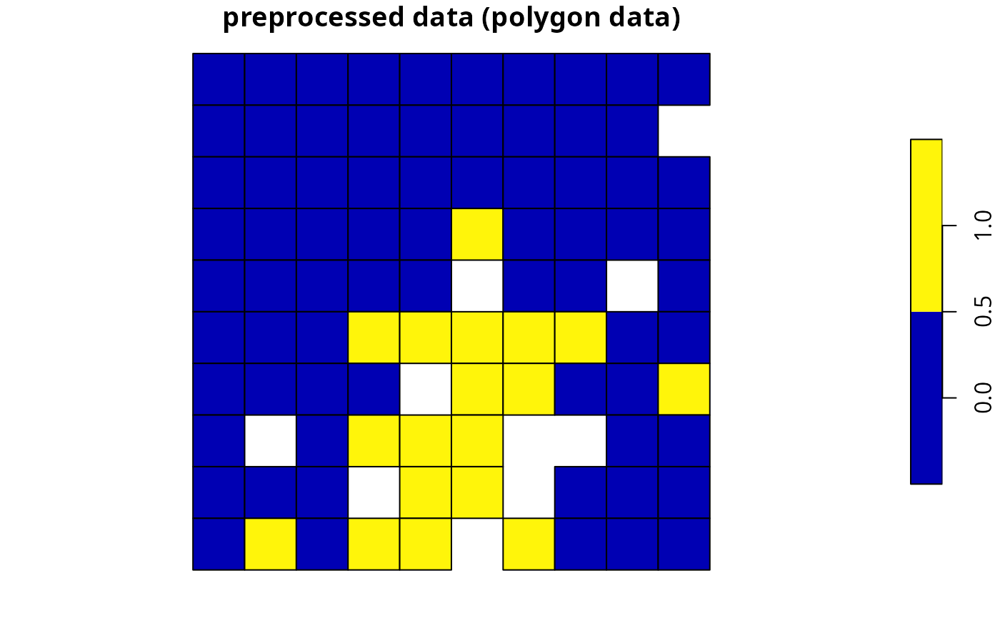
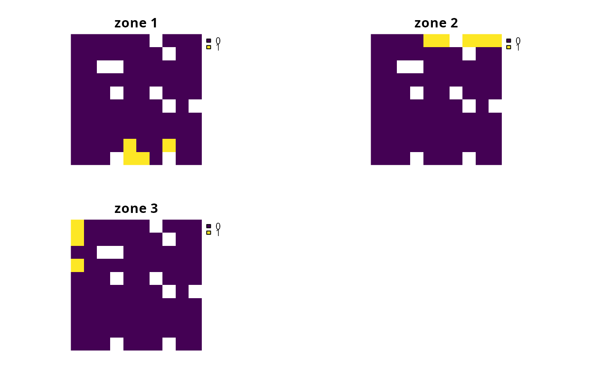
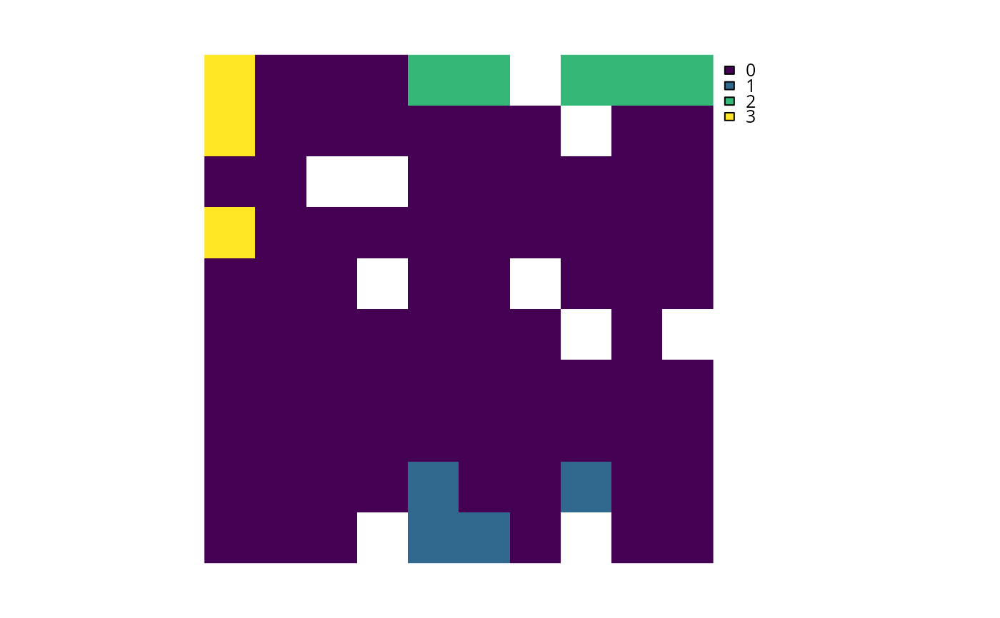

Create a systematic conservation planning problem. This function is used to
specify the basic data used in a spatial prioritization problem: the
spatial distribution of the planning units and their costs, as well as
the features (e.g. species, ecosystems) that need to be conserved. After
constructing this ConservationProblem-class object, it can be
customized to meet specific goals using objectives,
targets, constraints, and
penalties. After building the problem, the
solve() function can be used to identify solutions.
problem(x, features, ...) # S4 method for Raster,Raster problem(x, features, run_checks, ...) # S4 method for Raster,ZonesRaster problem(x, features, run_checks, ...) # S4 method for Spatial,Raster problem(x, features, cost_column, run_checks, ...) # S4 method for Spatial,ZonesRaster problem(x, features, cost_column, run_checks, ...) # S4 method for Spatial,character problem(x, features, cost_column, ...) # S4 method for Spatial,ZonesCharacter problem(x, features, cost_column, ...) # S4 method for data.frame,character problem(x, features, cost_column, ...) # S4 method for data.frame,ZonesCharacter problem(x, features, cost_column, ...) # S4 method for data.frame,data.frame problem(x, features, rij, cost_column, zones, ...) # S4 method for numeric,data.frame problem(x, features, rij_matrix, ...) # S4 method for matrix,data.frame problem(x, features, rij_matrix, ...) # S4 method for sf,Raster problem(x, features, cost_column, run_checks, ...) # S4 method for sf,ZonesRaster problem(x, features, cost_column, run_checks, ...) # S4 method for sf,character problem(x, features, cost_column, ...) # S4 method for sf,ZonesCharacter problem(x, features, cost_column, ...)
Arguments
| x |
|
|---|---|
| features | The feature data can be specified in a variety of ways.
The specific formats that can be used depend on the cost data format (i.e.
argument to
If the problem should have multiple zones, then the feature data can be specified following:
|
| ... | not used. |
| run_checks |
|
| cost_column |
|
| rij |
|
| zones |
|
| rij_matrix |
|
Value
ConservationProblem object containing
data for building a prioritization problem.
Details
A reserve design exercise starts by dividing the study region into planning units (typically square or hexagonal cells) and, for each planning unit, assigning values that quantify socioeconomic cost and conservation benefit for a set of conservation features. The cost can be the acquisition cost of the land, the cost of management, the opportunity cost of foregone commercial activities (e.g. from logging or agriculture), or simply the area. The conservation features are typically species (e.g. Clouded Leopard) or habitats (e.g. mangroves or cloud forest). The benefit that each feature derives from a planning unit can take a variety of forms, but is typically either occupancy (i.e. presence or absence) or area of occurrence within each planning unit. Finally, in some types of reserve design models, representation targets must be set for each conservation feature, such as 20% of the current extent of cloud forest or 10,000 km^2 of Clouded Leopard habitat (see targets).
The goal of the reserve design exercise is then to optimize the trade-off between conservation benefit and socioeconomic cost, i.e. to get the most benefit for your limited conservation funds. In general, the goal of an optimization problem is to minimize an objective function over a set of decision variables, subject to a series of constraints. The decision variables are what we control, usually there is one binary variable for each planning unit specifying whether or not to protect that unit (but other approaches are available, see decisions). The constraints can be thought of as rules that need to be followed, for example, that the reserve must stay within a certain budget or meet the representation targets.
Integer linear programming (ILP) is the subset of optimization algorithms used in this package to solve reserve design problems. The general form of an integer programming problem can be expressed in matrix notation using the following equation.
$$\mathit{Minimize} \space \mathbf{c}^{\mathbf{T}}\mathbf{x} \space \mathit{subject \space to} \space \mathbf{Ax}\geq= or\leq \mathbf{b}$$
Here, \(x\) is a vector of decision variables, \(c\) and \(b\) are vectors of known coefficients, and \(A\) is the constraint matrix. The final term specifies a series of structural constraints where relational operators for the constraint can be either \(\ge\), \(=\), or \(\le\) the coefficients. For example, in the minimum set cover problem, \(c\) would be a vector of costs for each planning unit, \(b\) a vector of targets for each conservation feature, the relational operator would be \(\ge\) for all features, and \(A\) would be the representation matrix with \(A_{ij}=r_{ij}\), the representation level of feature \(i\) in planning unit \(j\).
Please note that this function internally computes the amount of each
feature in each planning unit when this data is not supplied (using the
rij_matrix parameter). As a consequence, it can take a while to
initialize large-scale conservation planning problems that involve
millions of planning units.
See also
Examples
# load data data(sim_pu_raster, sim_pu_polygons, sim_pu_lines, sim_pu_points, sim_pu_sf, sim_features) # create problem using raster planning unit data p1 <- problem(sim_pu_raster, sim_features) %>% add_min_set_objective() %>% add_relative_targets(0.2) %>% add_binary_decisions() %>% add_default_solver(verbose = FALSE) # \dontrun{ # create problem using polygon (Spatial) planning unit data p2 <- problem(sim_pu_polygons, sim_features, "cost") %>% add_min_set_objective() %>% add_relative_targets(0.2) %>% add_binary_decisions() %>% add_default_solver(verbose = FALSE) # create problem using line (Spatial) planning unit data p3 <- problem(sim_pu_lines, sim_features, "cost") %>% add_min_set_objective() %>% add_relative_targets(0.2) %>% add_binary_decisions() %>% add_default_solver(verbose = FALSE) # create problem using point (Spatial) planning unit data p4 <- problem(sim_pu_points, sim_features, "cost") %>% add_min_set_objective() %>% add_relative_targets(0.2) %>% add_binary_decisions() %>% add_default_solver(verbose = FALSE) # create problem using polygon (sf) planning unit data p5 <- problem(sim_pu_sf, sim_features, "cost") %>% add_min_set_objective() %>% add_relative_targets(0.2) %>% add_binary_decisions() %>% add_default_solver(verbose = FALSE) # add columns to polygon planning unit data representing the abundance # of species inside them sim_pu_polygons$spp_1 <- rpois(length(sim_pu_polygons), 5) sim_pu_polygons$spp_2 <- rpois(length(sim_pu_polygons), 8) sim_pu_polygons$spp_3 <- rpois(length(sim_pu_polygons), 2) # create problem using pre-processed data when feature abundances are # stored in the columns of an attribute table for a spatial vector dataset p6 <- problem(sim_pu_polygons, features = c("spp_1", "spp_2", "spp_3"), "cost") %>% add_min_set_objective() %>% add_relative_targets(0.2) %>% add_binary_decisions() %>% add_default_solver(verbose = FALSE) # alternatively one can supply pre-processed aspatial data costs <- sim_pu_polygons$cost features <- data.frame(id = seq_len(nlayers(sim_features)), name = names(sim_features)) rij_mat <- rij_matrix(sim_pu_polygons, sim_features) p7 <- problem(costs, features, rij_matrix = rij_mat) %>% add_min_set_objective() %>% add_relative_targets(0.2) %>% add_binary_decisions() %>% add_default_solver(verbose = FALSE) # solve problems s1 <- solve(p1) s2 <- solve(p2) s3 <- solve(p3) s4 <- solve(p4) s5 <- solve(p5) s6 <- solve(p6) s7 <- solve(p7) # plot solutions for problems associated with spatial data par(mfrow = c(3, 2), mar = c(0, 0, 4.1, 0)) plot(s1, main = "raster data", axes = FALSE, box = FALSE) plot(s2, main = "polygon data") plot(s2[s2$solution_1 == 1, ], col = "darkgreen", add = TRUE) plot(s3, main = "line data") lines(s3[s3$solution_1 == 1, ], col = "darkgreen", lwd = 2) plot(s4, main = "point data", pch = 19) points(s4[s4$solution_1 == 1, ], col = "darkgreen", cex = 2, pch = 19) plot(s5, main = "sf (polygon) data", pch = 19)plot(s6, main = "preprocessed data", pch = 19) plot(s6[s6$solution_1 == 1, ], col = "darkgreen", add = TRUE) # show solutions for problems associated with aspatial data str(s7)#> num [1:90] 0 0 0 0 0 0 0 0 0 1 ... #> - attr(*, "objective")= Named num 3586 #> ..- attr(*, "names")= chr "solution_1" #> - attr(*, "status")= Named chr "OPTIMAL" #> ..- attr(*, "names")= chr "solution_1" #> - attr(*, "runtime")= Named num 0.004 #> ..- attr(*, "names")= chr "solution_1"# } # create some problems with multiple zones # first, create a matrix containing the targets for multi-zone problems # here each row corresponds to a different feature, each # column corresponds to a different zone, and values correspond # to the total (absolute) amount of a given feature that needs to be secured # in a given zone targets <- matrix(rpois(15, 1), nrow = number_of_features(sim_features_zones), ncol = number_of_zones(sim_features_zones), dimnames = list(feature_names(sim_features_zones), zone_names(sim_features_zones))) # print targets print(targets)#> zone_1 zone_2 zone_3 #> feature_1 2 0 2 #> feature_2 1 2 0 #> feature_3 0 1 0 #> feature_4 0 0 2 #> feature_5 1 4 3# create a multi-zone problem with raster data p8 <- problem(sim_pu_zones_stack, sim_features_zones) %>% add_min_set_objective() %>% add_absolute_targets(targets) %>% add_binary_decisions() %>% add_default_solver(verbose = FALSE) # \dontrun{ # solve problem s8 <- solve(p8) # plot solution # here, each layer/panel corresponds to a different zone and pixel values # indicate if a given planning unit has been allocated to a given zone par(mfrow = c(1, 1))# alternatively, the category_layer function can be used to create # a new raster object containing the zone ids for each planning unit # in the solution (note this only works for problems with binary decisions) par(mfrow = c(1, 1)) plot(category_layer(s8), axes = FALSE, box = FALSE)# create a multi-zone problem with polygon data p9 <- problem(sim_pu_zones_polygons, sim_features_zones, cost_column = c("cost_1", "cost_2", "cost_3")) %>% add_min_set_objective() %>% add_absolute_targets(targets) %>% add_binary_decisions() %>% add_default_solver(verbose = FALSE) # solve problem s9 <- solve(p9) # create column containing the zone id for which each planning unit was # allocated to in the solution s9$solution <- category_vector(s9@data[, c("solution_1_zone_1", "solution_1_zone_2", "solution_1_zone_3")]) s9$solution <- factor(s9$solution) # plot solution spplot(s9, zcol = "solution", main = "solution", axes = FALSE, box = FALSE)# create a multi-zone problem with polygon planning unit data # and where fields (columns) in the attribute table correspond # to feature abundances # first fields need to be added to the planning unit data # which indicate the amount of each feature in each zone # to do this, the fields will be populated with random counts sim_pu_zones_polygons$spp1_z1 <- rpois(nrow(sim_pu_zones_polygons), 1) sim_pu_zones_polygons$spp2_z1 <- rpois(nrow(sim_pu_zones_polygons), 1) sim_pu_zones_polygons$spp3_z1 <- rpois(nrow(sim_pu_zones_polygons), 1) sim_pu_zones_polygons$spp1_z2 <- rpois(nrow(sim_pu_zones_polygons), 1) sim_pu_zones_polygons$spp2_z2 <- rpois(nrow(sim_pu_zones_polygons), 1) sim_pu_zones_polygons$spp3_z2 <- rpois(nrow(sim_pu_zones_polygons), 1) # create problem with polygon planning unit data and use field names # to indicate feature data # additionally, to make this example slightly more interesting, # the problem will have prfoportion-type decisions such that # a proportion of each planning unit can be allocated to each of the # two management zones p10 <- problem(sim_pu_zones_polygons, zones(c("spp1_z1", "spp2_z1", "spp3_z1"), c("spp1_z2", "spp2_z2", "spp3_z2"), zone_names = c("z1", "z2")), cost_column = c("cost_1", "cost_2")) %>% add_min_set_objective() %>% add_absolute_targets(targets[1:3, 1:2]) %>% add_proportion_decisions() %>% add_default_solver(verbose = FALSE) # solve problem s10 <- solve(p10) # plot solution spplot(s10, zcol = c("solution_1_z1", "solution_1_z2"), main = "solution", axes = FALSE, box = FALSE)# }